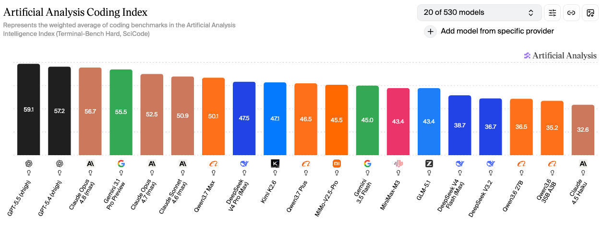
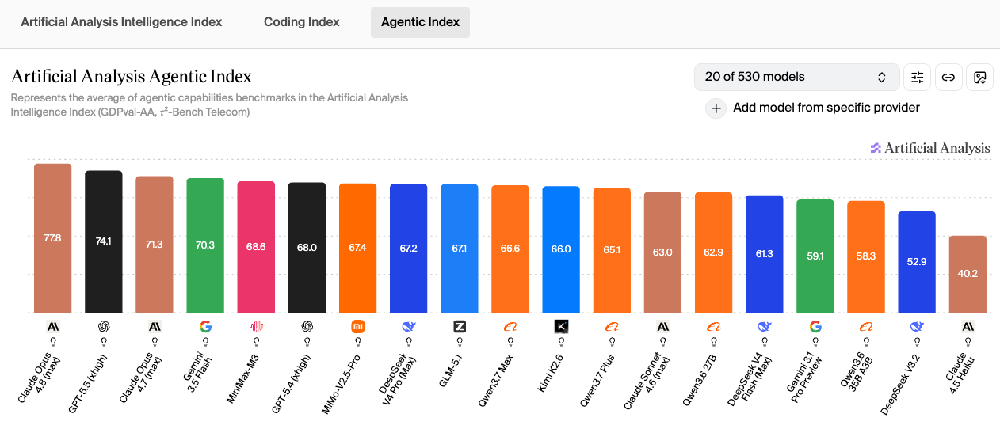

模型评测 · Coding Plan
2026年6月主流大模型Coding能力深度对比：GPT-5.5 领跑 Coding 指数，Claude Opus 4.8 加冕 Agentic 王座，国产多款跻身全球前十
更新日期： · 数据来源 vibecoding.dreamfree.space
基于独立评测机构 Artificial Analysis 发布的最新 AI 模型基准测试结果（数据来源：2026年6月），本文围绕 Coding 指数（Terminal-Bench Hard + SciCode）和 Agentic 智能指数（GDPval-AA + 𝜏²-Bench Telecom）两大核心指标，对当下主流大模型进行横向评测，并补充 ITBench-AA（Kubernetes 事故根因分析）、AA-Omniscience（知识可靠性与幻觉率）、GDPval-AA（真实世界任务 Elo 评分）三个单独测试维度的详细数据。
这两项核心指标与日常代码开发需求和 OpenClaw、Harness 等通用 Agent 场景高度契合：
- Coding 能力直接决定模型代码生成、调试优化、代码库理解的水平
- Agentic 能力则是评估模型自主规划复杂任务、调度外部工具、驱动自动化流程的核心依据
从测试数据来看，国产头部大模型已全面跻身全球第一梯队，与 OpenAI、Anthropic 等海外厂商的顶尖产品差距进一步缩小，且在性价比、国内生态适配性方面具备独特优势。同时 6 月榜单迎来重大变化：GPT-5.5 稳居 Coding 指数榜首，Claude Opus 4.8 加冕 Agentic 智能指数新王，Qwen3.7 Max、DeepSeek V4 Pro、Kimi K2.6、MiMo-V2.5-Pro 等国产旗舰共同跻身两大榜单全球前十。
一、快速对比总览
下表汇总了 6 月榜单中 19 款主流模型的四大关键指标，便于快速横向比较（上下文长度数据来源：llm-stats.com）：
| 模型 | 上下文长度 | 多模态 | Coding 指数 | Agentic 智能指数 |
|---|---|---|---|---|
| GPT-5.5 | ✅ 1M | ✅ 文本+图像 | 59.1 | 74.1 |
| GPT-5.4 | ✅ 1M | ✅ 文本+图像 | 57.2 | 68.0 |
| Claude Opus 4.8 | ✅ 1M | ✅ 文本+图像 | 56.7 | 77.8 |
| Gemini 3.1 Pro Preview | ✅ 1M | ✅ 文本+图像+音频+视频 | 55.5 | 59.1 |
| Claude Opus 4.7 | ✅ 1M | ✅ 文本+图像 | 52.5 | 71.3 |
| Claude Sonnet 4.6 | ❌ 200k | ✅ 文本+图像 | 50.9 | 63.0 |
| Qwen3.7 Max | ✅ 1M | ❌ 纯文本 | 50.1 | 66.6 |
| DeepSeek V4 Pro | ✅ 1M | ❌ 纯文本 | 47.5 | 67.2 |
| Kimi K2.6 | ❌ 262k | ✅ 文本+图像+视频 | 47.1 | 66.0 |
| Qwen3.7 Plus | ✅ 1M | ✅ 文本+图像+视频 | 46.5 | 65.1 |
| MiMo-V2.5-Pro | ✅ 1M | ❌ 纯文本 | 45.5 | 67.4 |
| Gemini 3.5 Flash | ✅ 1M | ✅ 文本+图像 | 45.0 | 70.3 |
| MiniMax-M3 | ✅ 1M | ✅ 文本+图像+视频 | 43.4 | 68.6 |
| GLM-5.1 | ❌ 200k | ❌ 纯文本 | 43.4 | 67.1 |
| DeepSeek V4 Flash | ✅ 1M | ❌ 纯文本 | 38.7 | 61.3 |
| DeepSeek V3.2 | ❌ 131k | ❌ 纯文本 | 36.7 | 52.9 |
| Qwen3.6 27B | ❌ 262k | ✅ 文本+图像 | 36.5 | 62.9 |
| Qwen3.6 35B A3B | ❌ 262k | ✅ 文本+图像 | 35.2 | 58.3 |
| Claude Haiku 4.5 | ❌ 200k | ✅ 文本+图像 | 32.6 | 40.2 |
二、整体格局：GPT-5.5 稳居 Coding 王座，国产头部跻身全球前十
1. Artificial Analysis Coding 指数（代码核心指标）

该指数整合 Terminal-Bench Hard（终端工具使用）与 SciCode（科研代码生成）两大测试维度，全面评估模型端到端完成软件工程任务的能力，是衡量 AI 编程工具实力的核心标准。
Coding 指数 TOP 榜（2026年6月，530 个模型中主要的前 19 位）：
- 全球头部阵营：GPT-5.5 59.1 分稳居榜首，GPT-5.4 57.2 紧随其后，Claude Opus 4.8 56.7 排名第三
- 旗舰阵营：Gemini 3.1 Pro Preview 55.5、Claude Opus 4.7 52.5、Claude Sonnet 4.6 50.9
- 国产第一梯队：Qwen3.7 Max 50.1 分排名全球第七，为国产模型首位；DeepSeek V4 Pro 47.5、Kimi K2.6 47.1、Qwen3.7 Plus 46.5、MiMo-V2.5-Pro 45.5、MiniMax-M3 43.4、GLM-5.1 43.4 紧随其后
- 中小模型阵营：Gemini 3.5 Flash 45.0、DeepSeek V4 Flash 38.7、DeepSeek V3.2 36.7、Qwen3.6 27B 36.5、Qwen3.6 35B A3B 35.2、Claude Haiku 4.5 32.6
2. Agentic 智能指数（通用 Agent 核心指标）

该指数综合 GDPval-AA 真实世界任务执行能力与 𝜏²-Bench Telecom 工具调用能力两大基准，量化评估模型自主完成多步骤复杂任务的表现，是衡量 OpenClaw 自动化运营潜力的核心标准。
Agentic 指数 TOP 榜（2026年6月，530 个模型中主要的前 19 位）：
- 全球头部阵营：Claude Opus 4.8 77.8 登顶，GPT-5.5 74.1、Claude Opus 4.7 71.3 占据全球前三
- 旗舰阵营：Gemini 3.5 Flash 70.3、MiniMax-M3 68.6、GPT-5.4 68.0、MiMo-V2.5-Pro 67.4、DeepSeek V4 Pro 67.2、GLM-5.1 67.1 紧随其后
- 国产第一梯队（65 分以上）：Qwen3.7 Max 66.6、Kimi K2.6 66.0、Qwen3.7 Plus 65.1 全部跻身全球前 12
- 性价比与开源阵营：Claude Sonnet 4.6 63.0、Qwen3.6 27B 62.9、DeepSeek V4 Flash 61.3、Gemini 3.1 Pro Preview 59.1、Qwen3.6 35B A3B 58.3、DeepSeek V3.2 52.9、Claude Haiku 4.5 40.2
三、单独测试维度详解
1. ITBench-AA（Kubernetes 事故根因分析，企业级 SRE 场景）
ITBench-AA TOP 榜（24 个模型中前 12 位）：
- Claude Opus 4.7 46.7% 居首，GPT-5.5 45.8% 第二，Qwen3.7 Max 42.5% 排名第三，是国产模型中 SRE 场景表现最强的
- Gemini 3.5 Flash 40.3%、GLM-5.1 40.3%、Claude Sonnet 4.6 39.8% 紧随其后
- DeepSeek V4 Pro 38.3%、MiMo-V2.5-Pro 38.2%、GPT-5.4 34.5%、DeepSeek V4 Flash 31.5%、Kimi K2.6 31.2% 同样表现优异
2. AA-Omniscience（知识可靠性与幻觉率）
AA-Omniscience TOP 10：
- 知识最可靠：Gemini 3.1 Pro Preview (33)、Claude Opus 4.8 (27)、Claude Opus 4.7 (26) 占据前三
- Gemini 3.5 Flash (23)、GPT-5.5 (20)、Qwen3.7 Max (14) 知识可靠性突出
- Claude Sonnet 4.6 (12) 表现稳定
- 国产模型中 Kimi K2.6 (6)、MiMo-V2.5-Pro (3)、Qwen3.7 Plus (2) 得分居中；GLM-5.1 (1)、MiniMax-M3 (1) 得分偏低；海外阵营中 GPT-5.4 (4) 同样居中
3. GDPval-AA（真实世界任务 Elo 评分）
GDPval-AA 是 Agentic 智能指数的核心子项，基于真实世界任务（涉及金融、咨询、销售、运营等职业任务）的成对对比 Elo 评分（分数越高越好），是衡量模型在 OpenClaw 等真实业务场景下表现的最直接指标。
GDPval-AA Elo TOP 榜（2026年6月，23 个模型中前 19 位）：
- 全球头部阵营：Claude Opus 4.8 1890 登顶，GPT-5.5 1769、Claude Opus 4.7 1753 占据全球前三
- 旗舰阵营：Claude Sonnet 4.6 1676、GPT-5.4 1674、MiniMax-M3 1670、Gemini 3.5 Flash 1656 紧随其后
- 国产第一梯队：MiMo-V2.5-Pro 1571、DeepSeek V4 Pro 1554、Qwen3.7 Max 1546、GLM-5.1 1535、Qwen3.7 Plus 1522、Kimi K2.6 1481 全部跻身全球前 15
- 性价比与开源阵营：Qwen3.6 27B 1404、DeepSeek V4 Flash 1388、Gemini 3.1 Pro Preview 1314、Qwen3.6 35B A3B 1298、DeepSeek V3.2 1197、Claude Haiku 4.5 1171
四、国产核心厂商模型深度解析
1. Qwen3.7 Max（阿里）：Coding 国产第一，全面领跑
Qwen3.7 Max 在 6 月榜单中表现亮眼，Coding 指数排名全球第七、国产第一；Agentic 智能指数跻身全球前十；ITBench-AA 位居全球第三，SRE 场景表现突出；知识可靠性在国产阵营中同样优秀。是国产 AI 编程领域的标杆。
阿里 Qwen 系列已建立完整的产品矩阵：Qwen3.7 Max（旗舰）、Qwen3.7 Plus（高性价比）、Qwen3.6 27B、Qwen3.6 35B A3B 等多档可选。但目前 Qwen 渠道主要通过阿里云百炼 API 销售，个人使用推荐购买 Token Plan 套餐，Qwen3.7 系列模型都可使用。
2. DeepSeek V4 Pro（深度求索）：开源标杆，均衡旗舰
DeepSeek V4 Pro 在 6 月榜单中依然保持强势：Coding 与 Agentic 指数均跻身全球前十；ITBench-AA 排名全球第七；知识可靠性相对较弱。是开源开放度最高的旗舰模型之一。
DeepSeek 独特优势：
- 完整的开源权重（V4 Pro / V4 Flash 均可商用）
- 独创的缓存机制使得缓存命中率高、缓存价格极低
- DeepSeek V4 Flash 输出速度极快、单价低（缓存命中 ¥0.02/百万 token，未命中输入 ¥1/百万 token，输出 ¥2/百万 token）
- 产品矩阵覆盖：V4 Pro、V4 Flash、V3.2 等多个档位
3. GLM-5.1（智谱AI）：综合能力均衡，企业级 SRE 优选
GLM-5.1 在 6 月榜单中维持国产顶级水准：Coding 指数稳居国产第一梯队；Agentic 智能指数跻身全球前十；ITBench-AA 排名全球第五；知识可靠性得分偏低。GLM-5.1 完全开源。
GLM-5.1 在 Claude Code 框架下表现稳定，是技术开发场景的可靠选择。其 Agentic 智能指数同样达到国产顶尖水平，能够支撑 OpenClaw 复杂流程的自主调度。
缺点：算力瓶颈较严重，Coding Plan 经常需要抢购，很难买到。
4. Kimi K2.6（月之暗面）：长上下文能力突出，编码功底扎实
Kimi K2.6 在 6 月榜单中表现稳健：Coding 指数排名全球第九；Agentic 智能指数跻身全球前十；知识可靠性尚可。Kimi K2.6 同样开源。
Kimi 核心优势：
- 支持文本+图像+视频多模态输入
- 模型代码能力优秀
- 较高强度日常开发够用
- 购买 Coding Plan 送专属龙虾
- Allegretto 套餐 ￥199/月 性价比突出
5. MiniMax-M3（稀宇科技）：高性价比、响应快
MiniMax-M3 在 6 月榜单中表现亮眼：Agentic 智能指数跻身全球前五（国产最高），知识可靠性得分偏低。
MiniMax 核心优势：
- 模型参数量较小使得 Coding Plan 套餐最实惠、额度限制最小
- 极速版套餐输出 Token 速率高、很少出现 429
- 用量限制高、可用性优于其他平台
- 日常交互体验出色，适合作为 OpenClaw 辅助工具
6. MiMo-V2.5-Pro（小米）：Agentic 能力国产第一梯队
MiMo-V2.5-Pro 在 6 月榜单中表现优异：Coding 与 Agentic 指数均跻身全球前十；ITBench-AA 表现优异；知识可靠性得分居中。MiMo-V2.5-Pro 完全开源。
MiMo 核心优势：
- Agentic 智能指数（67.4）位居国产第一梯队，领先 DeepSeek V4 Pro（67.2）和 GLM-5.1（67.1），仅次于 MiniMax-M3（68.6）
- 多工具协同调度、复杂自主流程执行方面表现接近 Claude Opus 系列
- 是驱动 OpenClaw 全流程自动化的最优选择之一
- 性价比高，企业集成成本低
五、个人使用选型参考指南
先想清楚自己更看重 写代码、跑 Agent（OpenClaw、Harness 等），还是 省钱 / 套餐额度；下列顺序即同场景下的推荐优先级，不必把上文榜单再抄一遍。
以写代码为主
- 国产：Qwen3.7 Max（Coding 国产第一）；想降一档可看 Qwen3.7 Plus；GLM-5.1 编码与 Agent 能力均衡，技术开发场景同样可靠（Coding Plan 常需抢购）
- 海外：GPT-5.5、Claude Opus 4.8 同属 Coding 第一梯队；通常需具备 ChatGPT / Claude 等相应付费订阅或 API 购买条件
以 OpenClaw、Harness 等 Agent 自动化为主
- 复杂、多步骤任务：Claude Opus 4.8（Agentic 榜首）、GPT-5.5；国产侧 MiniMax-M3、MiMo-V2.5-Pro 同样值得优先考虑
- 日常、高频、标准化流程：MiniMax-M3（响应快、套餐额度宽松）、DeepSeek V4 Flash（按量便宜）；轻量场景不必硬上 Opus / GPT
- 需求简单、可自部署：Qwen3.6 27B、Qwen3.6 35B A3B 等小模型也能胜任
预算与套餐怎么选
- 月费固定、天天写代码：MiniMax-M3 相关 Coding Plan 订阅性价比仍突出；能力要均衡可看 Qwen3.7 Plus
- 用量波动大、倾向按量付费：DeepSeek V4 Flash（缓存命中 ¥0.02/百万 token 起）；大流量可再对比 MiMo-V2.5-Pro Token 定价
- 自托管或纯开源：Qwen3.6 27B、Qwen3.6 35B A3B、DeepSeek V4 Pro 等，按部署与运维成本自行取舍
六、2026年6月榜单重大变化总结
- GPT-5.5 继续稳居 Coding 指数榜首，与 GPT-5.4、Claude Opus 4.8 共同构成第一梯队
- Claude Opus 4.8 在 Agentic 智能指数登顶，成为 Agentic 新王
- Qwen3.7 Max 跻身全球 Coding 指数前十（第七），是国产 AI 编程能力之巅
- Gemini 3.5 Flash Agentic 智能指数跻身全球第四
- DeepSeek V4 Flash 以缓存命中 ¥0.02/百万 token 创下极低单价
- MiniMax-M3 Agentic 智能指数跻身全球第五，国产阵营进一步壮大
- Qwen3.7 Plus 紧随 Qwen3.7 Max 发布，提供高性价比 Coding 选择